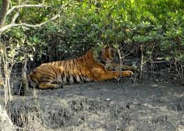
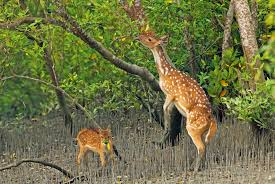
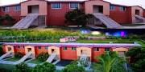
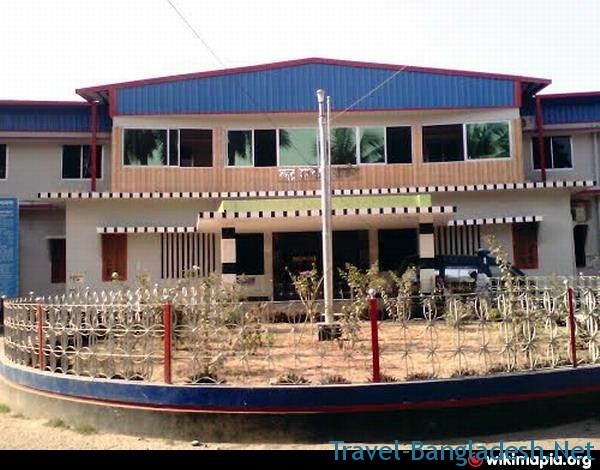
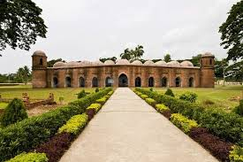
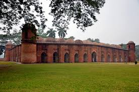

sundarban
 The Sundarbans is a natural region in southern Bangladesh and the extreme southern part of the Indian state of West Bengal in the vast river delta on the Bay of Bengal. It is the largest single block of tidal halophytic mangrove forest in the world.
Mozaffar Garden zoo
-  - Mozaffar Garden & Resort is also known as "Montu Miyar Bagan Bari (মন্টু মিয়ার বাগান বাড়ি)" is one of the place that really astonish me. ... The largest private zoo and the first 3D zoo in Bangladesh. ... Khairul Mozaffar
-  Jahajghata Naval fort is an ancient building at Moutola, Satkhira which was made in 1567. But the building as very fine decoration it still looks .
shat gambuj mosque
 The Sixty Dome Mosque, a UNESCO World Heritage Site, is a mosque in Bangladesh, the largest in that country from the Sultanate period. It has been described as "the most impressive Muslim monuments in the whole of the Indian subcontinent.